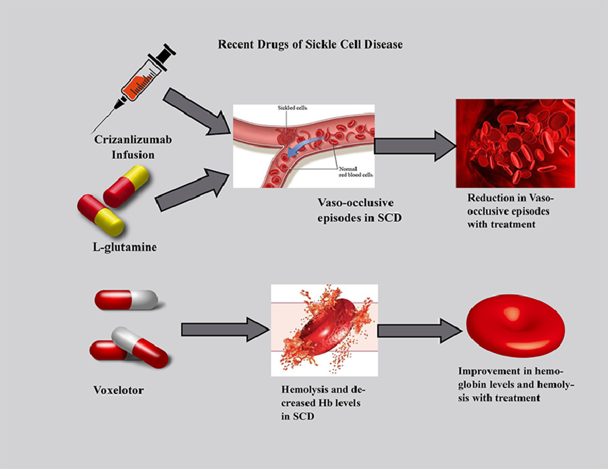
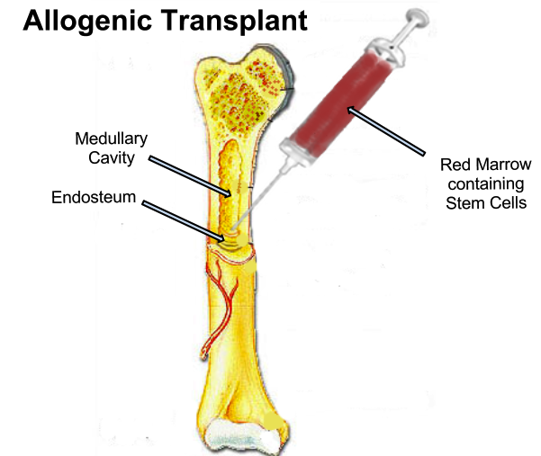

What Sickle Cell Treatments are Available?
How will they help your everyday life?

-
Treatments that are avialble for Sickle Cell Disease are mostly utilised to relieve certain symptoms. Medications that patients can take include:
- Pain-relieving medications: These medications block the release of prostaglandin, a chemical that causes nerves to send signals of pain to the brain. By blocking the release of prostaglandin, the pain a patient feels would be reduced.
- L-Glutamine: The International Journal of Molecular Sciences explains that L-Glutamine, "suppresses pro-inflammatory signaling pathways." This decreases the chance of a patient swelling up or having inflammations around their body.
- Voxelotor: This medication is the first, "hemoglobin oxygen-affinity modulator" (Global Blood Therapeutics, 2022). It raises your hemoglobin levels, helping you transport more oxygen around the body. After taking this, patients would feel less fatigued, less dizzy and less light-headed. It also assists organ functions in the body as more oxygen reaches them.
- Blood Transfusions: This procedure includes inserting healthy red blood cells into the body of somoene that has sickle cell disease. This ultimately raises the level of red blood cells in the body. Several symptoms such as eye-sight problems, constant fatigue and spleen ineffectivess can be solved as the increased number of red blood cells help transport oxygen around the body.
Is there a cure for Sickle Cell Disease?
Can you eradicate this disorder from your body?

Currently, the only possible cure for Sickle Cell Disease is to get an allogeneic bone marrow transplant. Only patients with severe or life-threatening problems should partake in this transplant. In a bone marrow transplant, cells that produce red blood cells are extracted from a healthy donor and inserted into the patient's blood stream. Ahead of the transplant, the patient has to go through chemotherapy or radiation therapy so that there body is prepared for the transplant. Allogenic transplants, such as this, take about 3 - 6 months to recover from. The video below can help you understand the basics of a bone marrow transplant.
Created by Karshin S -
8/2/22